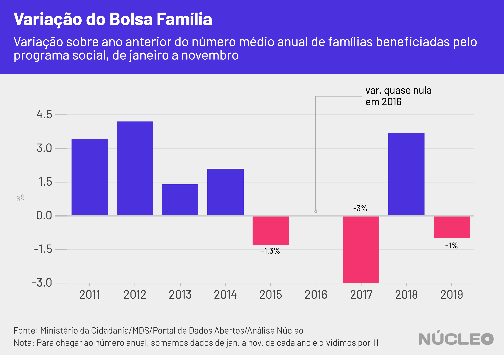
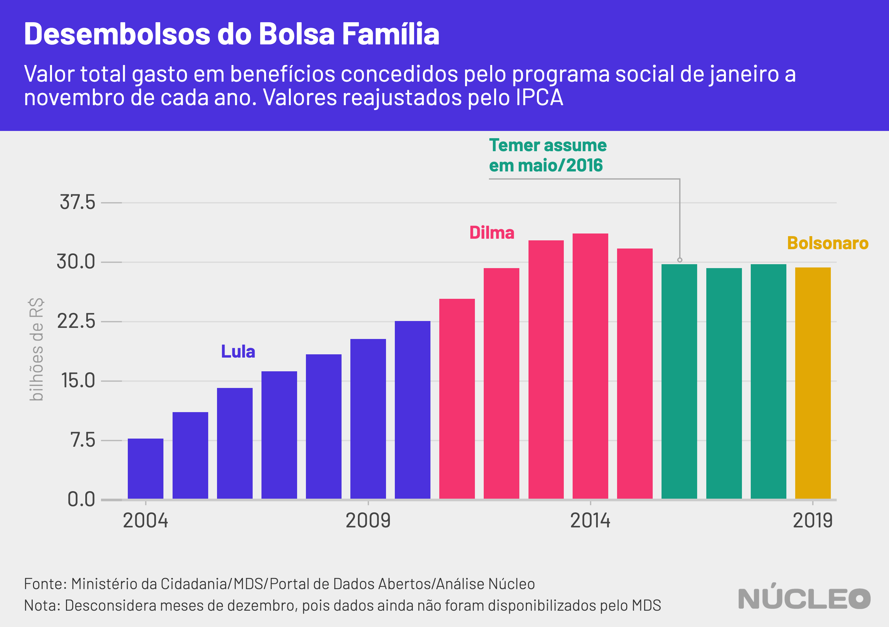

O Bolsa Família é o maior programa social do Brasil, com mais de 13 milhões de famílias beneficiadas. Desde o começo do ano, reportagens de veículos como El País, Folha de S.Paulo e Estado de S.Paulo (links abaixo) têm demonstrado indícios de enxugamento do programa, com aumento da fila para aqueles que buscam receber um valor médio de cerca de R$190/mês.
O Núcleo analisou dados do Ministério da Cidadania e constatou que houve queda de 7,3% no número de famílias beneficiárias do programa no período de 12 meses encerrado novembro de 2019. Se consideramos o comparativo entre janeiro de 2019 e novembro do mesmo ano, a queda é 4,1%.
É importante porque…
-
O Bolsa Família é o maior programa social do Brasil
-
Milhões de pessoas estão na fila para receber o benefício
-
Aperto fiscal pode estar prejudicando concessão de novos benefícios
Considerando uma média anual, em 2019 houve corte de 1% no número famílias beneficiadas – volume significativo, mas ainda assim menor do que um enxugamento de 3%, em 2017 sobre o ano anterior, durante o governo de Michel Temer; e um pouco menor do que a redução de 1,3% em 2015 ante 2014, no começo do segundo mandato de Dilma Rousseff.

Os dados oficiais podem ser encontrados no Portal de Dados Abertos do governo federal. Não foram divulgados, até 2 de março de 2020, dados sobre dezembro de 2019 – o qual foi retirado dessa conta, a fim de tornar todos os anos comparáveis sem levar em conta possível sazonalidade do último mês do ano.
O site El País tentou obter os dados junto ao governo, o qual descumpriu a Lei de Acesso à Informação e não forneceu a informação solicitada.
Além disso, o governo também não informa o tamanho da fila para aqueles que procuram receber os pagamentos do programa.
“Desde ao menos o início deste ano, a gestão Bolsonaro não explica o tamanho real da fila do Bolsa Família. Questionado, o ministério da Cidadania limitou-se a informar uma ‘média’ para o ano passado [2019], em torno de 494.000 famílias” – reportagem do El País.
O dado mais recente disponível ao fechamento desta reportagem, de novembro de 2019, mostra que o número de famílias aptas a receber o benefíco é de 13,19 milhões.
| data | milhões de famílias |
|---|---|
| Nov.18 | 14,23 |
| Dez.18 | 14,14 |
| Jan.19 | 13,76 |
| Fev.19 | 13,91 |
| Mar.19 | 14,11 |
| Abr.19 | 14,13 |
| Mai.19 | 14,34 |
| Jun.19 | 14,07 |
| Jul.19 | 13,84 |
| Ago.19 | 13,83 |
| Set.19 | 13,54 |
| Out.19 | 13,51 |
| Nov.19 | 13,19 |
Na imprensa
-
Governo Bolsonaro não explica tamanho real da fila do Bolsa Família ⋅ El País ⋅ (31/01/2020)
-
Bolsonaro trava Bolsa Família em cidades pobres e fila chega a 1 milhão ⋅ Folha de S.Paulo ⋅ (10/02/2020)
-
Governo Bolsonaro fecha porta e reduz em 75% reingressos ao Bolsa Família ⋅ Folha de S.Paulo ⋅ (15/02/2020)
-
Fila do Bolsa Família já tem 3,5 milhões de pessoas; municípios voltam a dar cesta básica ⋅ O Estado de S.Paulo ⋅ (18/02/2020)
-
Há um ano, governo já sabia da falta de dinheiro para o Bolsa Família ⋅ Folha de S.Paulo ⋅ (26/02/2020)
-
Governo Bolsonaro descumpre Lei de Acesso à Informação e não responde sobre Bolsa Família ⋅ El País ⋅ (02/03/2020)
No interativo abaixo, conseguimos ver com clareza toda a evolução do Bolsa Família, desde 2004, quando os benefícios começaram a ser concedidos.
Durante o governo Lula houve uma considerável evolução, especialmente a partir de 2006, à medida que o programa crescia. Se considerarmos que durante o mandato de Lula o Bolsa Família ainda estava se consolidando em todo o país, no começo do governo de Dilma Rousseff o benefício ultrapassou 13 milhões de famílias pela primeira vez.
A partir de 2014, no entanto, possivelmente por conta da crise econômica brasileira, começou a haver um enxugamento. No governo de Michel Temer houve a maior redução no programa até então, seguida de uma retomada de benefícios.
O governo de Jair Bolsonaro, por sua vez, assumiu em janeiro de 2019 com quase 14 milhões de famílias beneficiadas, e encerrou novembro com cerca de 570 mil famílias a menos.
Clique nos botões para trocar o gráfico
VALORES FINANCEIROS
Ao ajustarmos os dados pela inflação, conseguimos ver ganhos consideráveis nos benefícios concedidos a partir de 2006. Mas, novamente, durante o auge da crise, os valores médios começaram a cair paulatinamente a partir de 2014, para um patamar de cerca de R$190 por benefício.

Assim como a média dos benefícios pagos, os valores totais desembolsados pelo governo de janeiro a novembro também começaram a cair a partir de 2014. No caso do governo Bolsonaro, o total desembolsado estava bem em linha com os três anos imediatamente anteriores.

METODOLOGIA
O Núcleo baseou todas as suas análises em dados fornecidos diretamente pelo Ministério da Cidadania, sob a rubrica do Ministério do Desenvolvimento Social. Essas informações foram obtidas diretamente da API tal como disponibilizada no Portal de Dados Abertos do governo federal, que contém valores e números de famílias agrupados por município.
Nessa API ainda não constam dados de dezembro de 2019 (ver print abaixo), motivo pelo qual esse mês foi desconsiderado nas análises, a fim de evitar distorções por conta de possíveis, embora não imediatamente averiguadas, características sazonais do último mês do ano.

link para página acima
A extração dos dados e as análises foram feitas utilizando a linguagem de programação R, e os códigos podem ser encontrados integralmente neste link.
Por termos feito apenas uma descrição dos dados encontrados, sem chegar a conclusões nem juízos, o Núcleo não entrou em contato com o governo para pedir esclarecimentos. Se governo, organizações ou pessoas desejarem enviar algum esclarecimento acerca desses dados, favor contatar os editores no email nucleo@voltdata.info.
Essa reportagem pode ser atualizada caso os dados de dezembro de 2019 sejam publicados.